多元与二重
阶段: 基础(5月) + 强化(7月) | 覆盖课件 11 份: 0516（3）、0523（1-3）、0530（1）、多元函数微分学、二重积分、0724（1-2）、0725（1-2） 📖 例题全量见: 多元与二重 · 例题集
板块总览
多元微积分是一元微积分的平行延伸: 极限从直线趋近变为平面上任意路径趋近, 导数从一个方向变为多个方向(偏导数), 全微分是线性近似的多维版本, 极值从一阶导为零变为梯度为零, 积分从线段变为平面区域。
本板块按 微分学(极限→连续→偏导→全微分→求导计算→极值) → 积分学(定义→性质→计算→对称性) 组织。微分学每年 1-2 题, 积分学每年 1 题, 以计算为主。
核心难点: ① 多元极限的路径依赖性(不同路径趋近, 极限可能不同); ② 连续/偏导存在/可微三者的关系链; ③ 复合函数求偏导的链式法则(二阶不再对称简单); ④ 二重积分的坐标系选择与积分次序交换。
一、多元函数微分学
1.1 多元函数基本概念
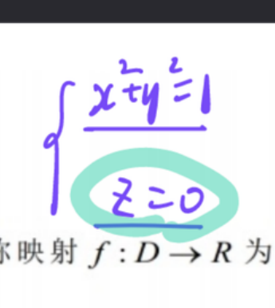
课件原图展开
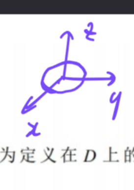
课件原图展开
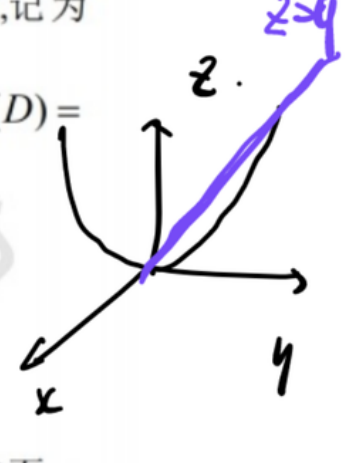
课件原图展开
定义 设 $D\subset\mathbb{R}^2$, 映射 $f:D\to\mathbb{R}$ 称为二元函数, 记 $z=f(x,y)$, 其中 $D$ 为定义域, $f(D)=\{z\mid z=f(x,y),(x,y)\in D\}$ 为值域。三元及以上类似。
几何意义 二元函数 $z=f(x,y)$ 表示三维空间中的一张曲面。如 $z=x^2+y^2$ 是旋转抛物面, $z=\sqrt{1-x^2-y^2}$ 是上半球面。
【来源: 0516（3）】
1.2 二元函数的极限 必考
核心结论 $$ \lim_{(x,y)\to(x_0,y_0)} f(x,y) = A \iff \forall\varepsilon>0,\ \exists\delta>0,\ \text{当 } 0<\sqrt{(x-x_0)^2+(y-y_0)^2}<\delta \text{ 时},\ |f(x,y)-A|<\varepsilon $$
直觉 一元极限是"从左右两侧趋近同一值", 二元极限是"从任意方向、任意路径趋近同一值"——要求严苛得多。动点 $(x,y)$ 以任何方式趋近 $(x_0,y_0)$ 时 $f(x,y)$ 都必须趋于 $A$。
极限不存在判定 高频 若能找到两条不同路径使其极限不相等, 则极限不存在。特别地, 当 $(x_0,y_0)=(0,0)$ 时, 选 $y=kx$, 若极限值与 $k$ 有关, 则极限不存在。
为什么选 $y=kx$? 这是穿过原点的直线束, 能覆盖所有方向的直线趋近方式。若沿不同斜率的直线极限不同, 说明在原点附近函数值因方向而异——极限当然不存在。
计算方法 四则运算、无穷小替换、夹逼准则、无穷小乘有界量 —— 与一元极限完全平行, 但路径判别是二元特有的考点。
易错点 易错 不能用洛必达法则(洛必达是一元的, 对多元没有直接对应)。二元极限必须先判断存在性, 选定路径求得的极限不一定代表二重极限。
【来源: 0516（3）、多元函数微分学】
1.3 二元函数的连续性
定义 若 $\displaystyle\lim_{(x,y)\to(x_0,y_0)} f(x,y) = f(x_0,y_0)$, 则 $f$ 在 $(x_0,y_0)$ 连续。
有界闭区域上的性质 (与一元一致):
- 有界性: 连续函数在有界闭区域上有界
- 最值定理: 必取到最大值和最小值
- 介值定理: 必取得介于最大值和最小值之间的任何值
【来源: 0516（3）】
1.4 偏导数 必考
定义 固定 $y=y_0$, 对 $x$ 求导(视 $y$ 为常数): $$ f_x(x_0,y_0) = \lim_{\Delta x\to0} \frac{f(x_0+\Delta x, y_0) - f(x_0,y_0)}{\Delta x} = \lim_{x\to x_0} \frac{f(x,y_0) - f(x_0,y_0)}{x-x_0} $$
$f_y(x_0,y_0)$ 类似, 固定 $x=x_0$ 对 $y$ 求导。
几何意义 $f_x(x_0,y_0)$ 是曲面 $z=f(x,y)$ 被平面 $y=y_0$ 截出的曲线在 $(x_0,y_0)$ 处切线的斜率($x$ 方向的陡峭程度); $f_y(x_0,y_0)$ 同理是 $y$ 方向的斜率。
直觉: 偏导数 = "冻结"其他变量后的一元导数。求 $f_x$ 时把 $y$ 当常数; 求 $f_y$ 时把 $x$ 当常数。
二阶偏导数 偏导数 $f_x$, $f_y$ 仍是二元函数, 可继续求偏导:
- $f_{xx} = \frac{\partial^2 z}{\partial x^2}$ (纯偏导)
- $f_{xy} = \frac{\partial^2 z}{\partial x\partial y}$ (先 $x$ 后 $y$ 的混合偏导)
- $f_{yx} = \frac{\partial^2 z}{\partial y\partial x}$ (先 $y$ 后 $x$ 的混合偏导)
- $f_{yy} = \frac{\partial^2 z}{\partial y^2}$ (纯偏导)
混合偏导的次序 重点 当 $f_{xy}$ 和 $f_{yx}$ 都连续时, $f_{xy}=f_{yx}$。具体函数直接验证, 抽象函数需依据连续性条件。
易错点 易错 偏导存在和连续的关系: 偏导数存在 推不出 连续(一元可导必连续, 但多元不行!)。反例: $f(x,y)=\frac{xy}{x^2+y^2}$ 在 $(0,0)$ 偏导存在(用定义算都是 0)但不连续(极限不存在)。
【来源: 0516（3）、0724（1）】
1.5 全微分 必考
定义 若全增量 $\Delta z = f(x_0+\Delta x, y_0+\Delta y) - f(x_0,y_0)$ 可表示为: $$ \Delta z = A\Delta x + B\Delta y + o(\rho),\quad \rho=\sqrt{(\Delta x)^2+(\Delta y)^2} $$ 其中 $A,B$ 与 $\Delta x,\Delta y$ 无关, 则称 $f$ 在 $(x_0,y_0)$ 可微, 全微分为 $dz = A\,dx + B\,dy$。 此时必有 $A=f_x(x_0,y_0)$, $B=f_y(x_0,y_0)$, 即: $$ dz = f_x\,dx + f_y\,dy $$
直觉: 可微 = 函数在局部可以用平面(切平面)线性近似, 误差是比距离 $\rho$ 更高阶的无穷小。一元可微 = 局部可用切线近似; 二元可微 = 局部可用切平面近似——完全平行。
可微的判定: 定义极限形式 重点 $f$ 在 $(x_0,y_0)$ 可微的充要条件是: $$ \lim_{\substack{\Delta x\to0 \\ \Delta y\to0}} \frac{f(x_0+\Delta x, y_0+\Delta y) - f(x_0,y_0) - f_x(x_0,y_0)\Delta x - f_y(x_0,y_0)\Delta y}{\sqrt{(\Delta x)^2+(\Delta y)^2}} = 0 $$
这是判定可微性的核心工具——先算出偏导, 再代入这个极限验证是否为 0。
可微的充分条件 若一阶偏导 $f_x$, $f_y$ 在 $(x_0,y_0)$ 连续, 则 $f$ 在该点可微。(偏导连续 ⇒ 可微, 但反过来不对: 可微不一定偏导连续。)
可微的必要条件
- 可微 ⇒ 偏导存在
- 可微 ⇒ 连续
关系链总结 必考 $$ \text{偏导连续} \;\Rightarrow\; \text{可微} \;\Rightarrow\; \begin{cases} \text{偏导存在} \\ \text{连续} \end{cases} $$
但反方向全部不成立:
- 偏导存在 ⇏ 连续 (例: $xy/(x^2+y^2)$)
- 连续 ⇏ 偏导存在 (例: $|x|+|y|$ 在原点)
- 连续 + 偏导存在 ⇏ 可微 (例: $\sqrt{|xy|}$ 在原点)
易错点 易错 经常考: 偏导存在推不出连续, 连续推不出偏导存在, 两者合起来也推不出可微。唯一可靠的充分条件是"偏导连续"。判断对错题最爱考这些反例。
【来源: 0523（1）、0724（1）】
1.6 复合函数求偏导(链式法则) 高频
核心结论 设 $z=f(u,v)$, $u=u(x,y)$, $v=v(x,y)$, 则: $$ \frac{\partial z}{\partial x} = \frac{\partial f}{\partial u}\frac{\partial u}{\partial x} + \frac{\partial f}{\partial v}\frac{\partial v}{\partial x} $$ $$ \frac{\partial z}{\partial y} = \frac{\partial f}{\partial u}\frac{\partial u}{\partial y} + \frac{\partial f}{\partial v}\frac{\partial v}{\partial y} $$
树形图法 重点 画变量依赖图: $z$ 依赖于 $u,v$; $u$ 和 $v$ 各自依赖于 $x,y$。要求 $\frac{\partial z}{\partial x}$, 就沿图从 $z$ 到 $x$ 的所有路径求和——每条路径连乘各段导数。这个方法几乎不会出错。
二阶偏导 易错 求 $\frac{\partial^2 z}{\partial x^2}$ 或 $\frac{\partial^2 z}{\partial x\partial y}$ 时, 一阶偏导 $\frac{\partial z}{\partial x}$ 本身是 $x,y$ 的函数(通过 $u,v$ 依赖), 必须再次用链式法则。常见错误: 直接把 $f_u',f_v'$ 当常数对 $x$ 求偏导。
抽象函数的记法 注意 若 $f$ 是抽象的(未给具体表达式), $f_u'$ 和 $f_v'$ 本身仍是 $u,v$ 的函数, 再次求导时需区分: 对第一个变量还是第二个变量的偏导。记 $f_1'$ 表示对第一个中间变量求偏导, $f_{12}''$ 表示先对第一个再对第二个。
$f_u'(e^x y, xy)$ 对 $x$ 求导时: $$ \frac{\partial}{\partial x}[f_u'(e^x y, xy)] = f_{uu}'' \cdot e^x y + f_{uv}'' \cdot y $$
为什么不能合并 $f_u'(e^x y, xy)$ 和 $f_u(\ln x)$? 因为这是两个完全不同的函数——一个的自变量是 $e^x y$ 和 $xy$, 另一个的自变量是 $\ln x$。即使记法相同, 它们不是同一个映射, 不能当做同类项合并。
【来源: 0523（1）、0724（1）】
1.7 隐函数求偏导
隐函数存在定理 1(一元隐函数) 设 $F(x,y)$ 在 $(x_0,y_0)$ 某邻域有连续偏导, $F(x_0,y_0)=0$, $F_y(x_0,y_0)\neq0$, 则方程 $F(x,y)=0$ 在 $(x_0,y_0)$ 邻域内唯一确定 $y=f(x)$, 且: $$ \frac{dy}{dx} = -\frac{F_x}{F_y} $$
隐函数存在定理 2(二元隐函数) 设 $F(x,y,z)$ 在 $(x_0,y_0,z_0)$ 某邻域有连续偏导, $F(x_0,y_0,z_0)=0$, $F_z(x_0,y_0,z_0)\neq0$, 则方程 $F(x,y,z)=0$ 唯一确定 $z=f(x,y)$, 且: $$ \frac{\partial z}{\partial x} = -\frac{F_x}{F_z},\qquad \frac{\partial z}{\partial y} = -\frac{F_y}{F_z} $$
公式法 把方程写成 $F(x,y,z)=0$, 直接套公式比两边求偏导再移项更不易出错。
解题技巧 求具体点的偏导时, 先代入点坐标算出 $z$ 值, 再算偏导。有时不需要解出 $z(x,y)$ 的显式。
【来源: 0523（1）、0724（2）】
1.8 多元函数极值与最值 必考
1.8.1 无条件极值
必要条件 若 $f$ 在 $(x_0,y_0)$ 可微且取得极值, 则梯度为零: $$ f_x(x_0,y_0)=0,\quad f_y(x_0,y_0)=0 $$ 满足此条件的点称为驻点。驻点是极值点的候选者(但不一定是, 如鞍点)。
充分条件(AC-B² 判别法) 必考 设 $f$ 在 $(x_0,y_0)$ 有连续二阶偏导, 且 $f_x=f_y=0$。令: $$ A = f_{xx}(x_0,y_0),\quad B = f_{xy}(x_0,y_0),\quad C = f_{yy}(x_0,y_0) $$ 计算判别式 $\Delta = AC - B^2$:
- $\Delta > 0$: 是极值。其中 $A>0$ 为极小值, $A<0$ 为极大值
- $\Delta < 0$: 不是极值(鞍点)
- $\Delta = 0$: 不确定, 需用定义或其他方法判断
直觉: $AC-B^2$ 是 Hessian 矩阵的行列式。$\Delta>0$ 表示曲面在该点处是碗状的(都向上弯或都向下弯); $\Delta<0$ 表示马鞍状——沿一个方向向上弯、沿另一个向下弯, 不像极值点; $\Delta=0$ 时曲率信息不足以判断。
易错点 易错 必须先算 $f_x=f_y=0$ 找到驻点, 再对每个驻点算 $A,B,C$ 和 $\Delta$。漏掉任何一个驻点都会丢解。另外注意: 偏导不存在的点也可能是极值点(如 $|x|+|y|$ 在原点), 用定义单独判断。
1.8.2 条件极值(拉格朗日乘数法) 必考
求 $u=f(x,y,z)$ 在约束 $\varphi(x,y,z)=0$ 下的极值:
步骤:
- 构造拉格朗日函数: $L(x,y,z,\lambda) = f(x,y,z) + \lambda\,\varphi(x,y,z)$
- 令所有偏导为零: $L_x=L_y=L_z=L_\lambda=0$
- 解方程组得驻点。若驻点唯一, 则默认为所求极值点(实际问题常如此); 若有多个, 则代入比较大小。
多约束推广 若有 $\varphi=0$ 和 $\psi=0$ 两个约束: $$ L(x,y,z,\lambda,\mu) = f(x,y,z) + \lambda\,\varphi(x,y,z) + \mu\,\psi(x,y,z) $$
为什么乘 $\lambda$ 就行? 极值点处目标函数的梯度必须与约束曲面的法向量平行(否则沿曲面移动还能增大/减小函数值)。拉格朗日乘子 $\lambda$ 恰好刻画了这个比例关系。
1.8.3 闭区域最值
求 $f(x,y)$ 在有界闭区域 $D$ 上的最大/最小值:
- 求 $D$ 内部的全体驻点, 计算函数值
- 求 $D$ 边界上 $f$ 的最大/最小值(把边界方程代入, 化为一元函数最值; 或用拉格朗日乘数法)
- 内部值 + 边界值放在一起比较, 取最大和最小
1.8.4 极值与最值的联系
注意 $AC-B^2<0$ 说明 $D$ 内部无极值 ⇒ 最值必在边界上取得。考题常把这作为推论: 若区域内判别式恒负, 则最大值和最小值都在边界上。
【来源: 0523（2）、0530（1）、多元函数微分学、0724（2）】
二、二重积分
2.1 定义与几何意义
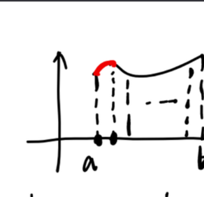
课件原图展开
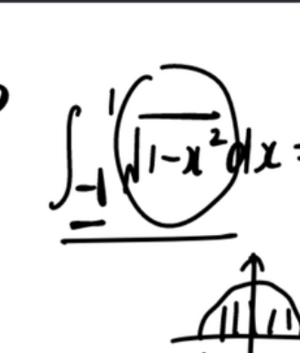
课件原图展开
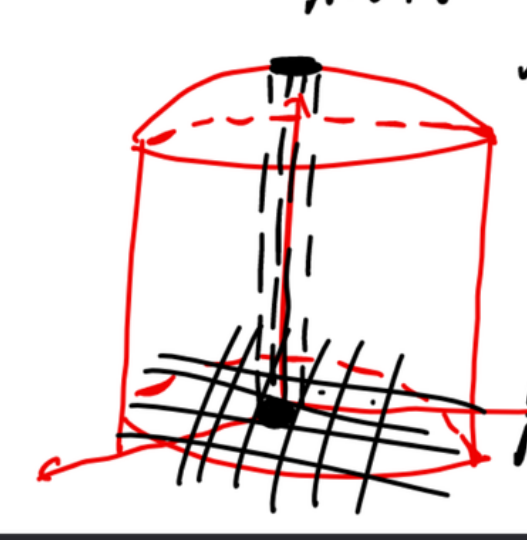
课件原图展开
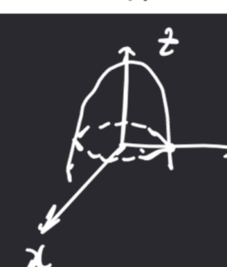
课件原图展开
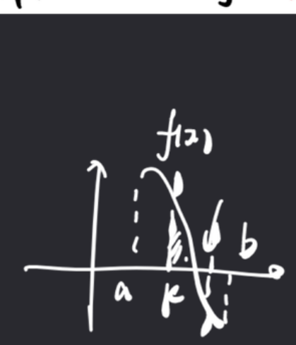
课件原图展开
定义 设 $f(x,y)$ 在有界闭区域 $D$ 上有界, 将 $D$ 任意分割为 $n$ 个小区域 $\Delta\sigma_i$, 每个上取点 $(\xi_i,\eta_i)$, 作积分和 $\sum f(\xi_i,\eta_i)\Delta\sigma_i$。当分割无限加密(所有小区域直径的最大值 $\lambda\to0$)时, 此和式的极限称为 $f$ 在 $D$ 上的二重积分: $$ \iint_D f(x,y)\,d\sigma = \lim_{\lambda\to0}\sum_{i=1}^{n} f(\xi_i,\eta_i)\Delta\sigma_i $$
几何意义 若 $f(x,y)\ge0$, 二重积分表示以 $D$ 为底、以曲面 $z=f(x,y)$ 为顶的曲顶柱体的体积。
存在性 $f(x,y)$ 在闭区域 $D$ 上连续 ⇒ 二重积分存在。
直觉: 一元定积分 = 把线段切成小段求和的极限; 二重积分 = 把平面区域切成小块求和的极限。计算时"化二重为二次"(先对一个变量积分再对另一个积分)。
【来源: 二重积分、0530（1）】
2.2 二重积分的性质
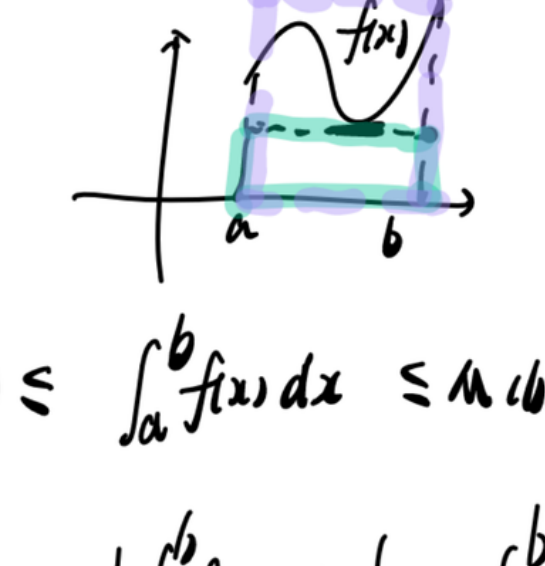
课件原图展开
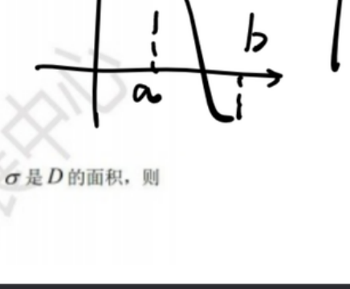
课件原图展开
- 线性: $\iint(\alpha f+\beta g) = \alpha\iint f + \beta\iint g$
- 区域可加性: $D=D_1\cup D_2$ 且 $D_1,D_2$ 不重叠, 则 $\iint_D = \iint_{D_1} + \iint_{D_2}$
- 面积: $f(x,y)\equiv1$ 时, $\iint_D 1\,d\sigma = S_D$ (区域 $D$ 的面积)
- 保序性: 若在 $D$ 上 $f\le g$, 则 $\iint_D f \le \iint_D g$。特别地, $|\iint_D f| \le \iint_D |f|$
- 估值不等式: $m\sigma \le \iint_D f(x,y)\,d\sigma \le M\sigma$, 其中 $m,M$ 为 $f$ 在 $D$ 上的最小/最大值, $\sigma$ 为 $D$ 的面积
- 中值定理: 若 $f$ 在闭区域 $D$ 上连续, 则存在 $(\xi,\eta)\in D$ 使得: $$ \iint_D f(x,y)\,d\sigma = f(\xi,\eta)\cdot S_D $$
形心公式(高频秒杀) 高频 区域 $D$ 的形心 $$ \bar x=\frac{\iint_D x\,d\sigma}{\iint_D 1\,d\sigma}=\frac{\iint_D x}{S_D},\qquad \bar y=\frac{\iint_D y}{S_D} $$ 反过来: $\iint_D x = \bar x\cdot S_D$, $\iint_D y=\bar y\cdot S_D$——形心坐标已知(或可心算)时, 一重积分当面积乘坐标, 秒杀一切。例: 圆域形心在圆心、三角形形心 = 三顶点坐标平均、$y=x^2$ 与 $y=x$ 围成区域的形心… 例题 7.1/8.4/8.6/8.7 全部靠它。
【来源: 二重积分、0523(3)、0530(1)、0725(1)】
2.3 直角坐标下的计算 必考
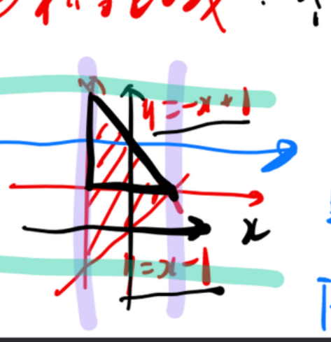
课件原图展开
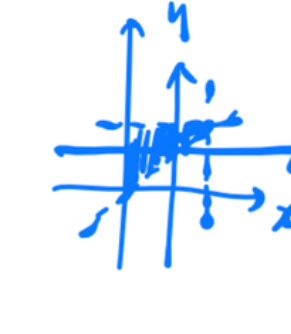
课件原图展开
核心方法: 化二重积分为二次积分
口诀: "后积先定限, 限内画条线; 先交写下限, 后交写上限。"
X 型区域 ($D$ 由 $a\le x\le b$, $y_1(x)\le y\le y_2(x)$ 描述): $$ \iint_D f(x,y)\,dxdy = \int_a^b dx \int_{y_1(x)}^{y_2(x)} f(x,y)\,dy $$ 先对 $y$ 积分(视 $x$ 为常数), 再对 $x$ 积分。
Y 型区域 ($D$ 由 $c\le y\le d$, $x_1(y)\le x\le x_2(y)$ 描述): $$ \iint_D f(x,y)\,dxdy = \int_c^d dy \int_{x_1(y)}^{x_2(y)} f(x,y)\,dx $$ 先对 $x$ 积分, 再对 $y$ 积分。
选 X 型还是 Y 型? 先看被积函数: 对哪个变量好积就先积那个。再看区域边界: 哪边表达简单就后积。两者都不好就用对称性或换坐标系。
交换积分次序 高频 有时原次序难积(如 $\int\frac{\sin x}{x}dx$ 积不出), 需要交换次序。步骤: ① 由原积分上下限画出积分区域 $D$; ② 按另一种类型重新描述 $D$; ③ 写出交换后的二次积分。
【来源: 二重积分、0725（1-2）】
2.4 极坐标下的计算 必考
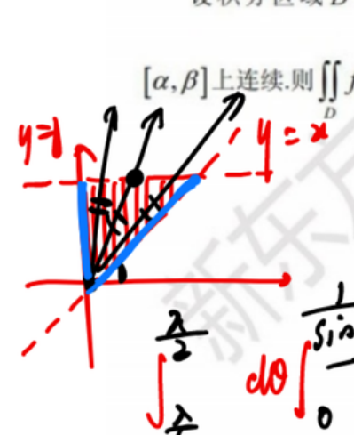
课件原图展开
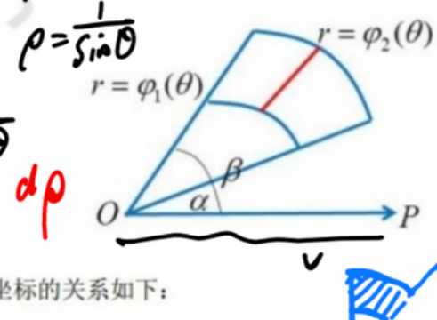
课件原图展开
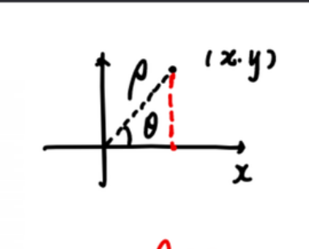
课件原图展开
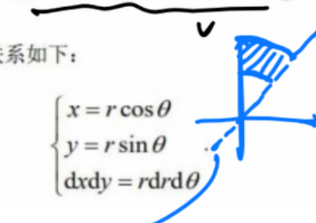
课件原图展开
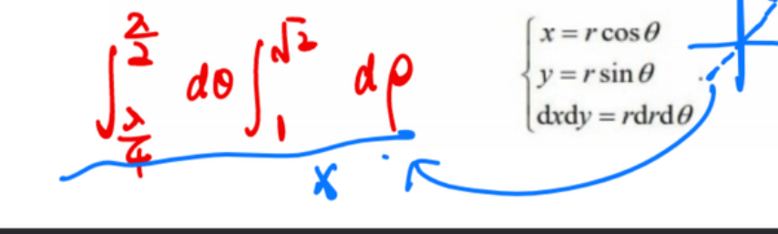
课件原图展开
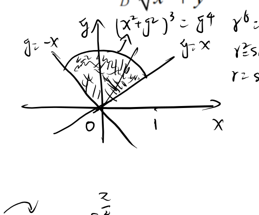
课件原图展开
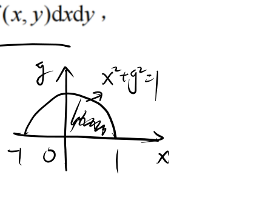
课件原图展开
什么时候用极坐标? ① 被积函数含 $x^2+y^2$; ② 积分区域是圆/圆环/扇形。
坐标变换: $$ x = r\cos\theta,\quad y = r\sin\theta,\quad dxdy = r\,dr\,d\theta $$
常见区域描述:
- 圆盘 $x^2+y^2\le a^2$: $0\le\theta\le2\pi$, $0\le r\le a$
- 上半圆盘 $x^2+y^2\le a^2, y\ge0$: $0\le\theta\le\pi$, $0\le r\le a$
- 圆环 $a^2\le x^2+y^2\le b^2$: $0\le\theta\le2\pi$, $a\le r\le b$
- 偏心圆 $x^2+y^2\le 2ax$: 化为 $r\le 2a\cos\theta$
易错点 易错 别忘乘以 $r$ ($dxdy = r\,dr\,d\theta$)！这是极坐标变换中最常见的丢分点。$r$ 来自雅可比行列式 $J=\frac{\partial(x,y)}{\partial(r,\theta)}=r$。
【来源: 0530（1）、二重积分、0725（1）】
2.5 对称性(化简利器) 高频
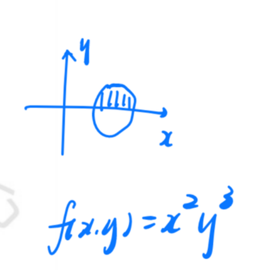
课件原图展开
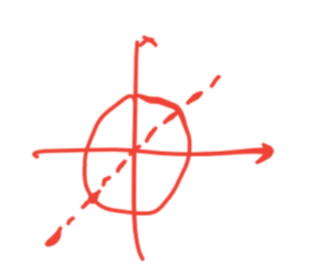
课件原图展开
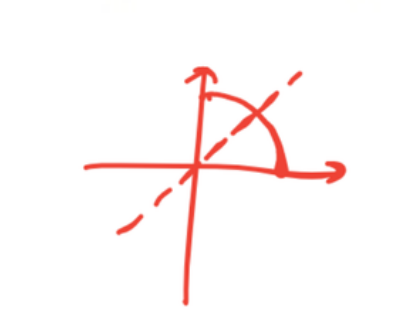
课件原图展开
2.5.1 奇偶对称性
关于 $x$ 轴对称 ($D$ 上下对称):
- $f(x,y)$ 关于 $y$ 为奇函数($f(x,-y)=-f(x,y)$): $\iint_D f = 0$
- $f(x,y)$ 关于 $y$ 为偶函数($f(x,-y)=f(x,y)$): $\iint_D f = 2\iint_{D_1} f$, $D_1$ 为 $D$ 在上半平面的部分
关于 $y$ 轴对称 ($D$ 左右对称):
- $f(x,y)$ 关于 $x$ 为奇函数: $\iint_D f = 0$
- $f(x,y)$ 关于 $x$ 为偶函数: $\iint_D f = 2\iint_{D_2} f$, $D_2$ 为 $D$ 在右半平面的部分
考试技巧: 看到 $xy$、$x^3$、$y^3$ 等在对称区域上的积分, 首先想奇偶性——很可能直接归零, 省去大量计算。
2.5.2 轮换对称性 重点
通用操作(必会): 若 $D$ 关于 $y=x$ 对称, 则 $\iint_D f(x,y)=\iint_D f(y,x)$, 相加得 $$ 2I=\iint_D[f(x,y)+f(y,x)]\,d\sigma $$ 当 $f(x,y)+f(y,x)$ 好积时(如分母 $=f(x)+f(y)$ 型、$\frac{\sin x}{\sin x+\sin y}$ 型), 一步化简。一元版: $\int_0^{\pi/2}\frac{\sin x}{\sin x+\cos x}dx=\frac\pi4$ 是同一技巧。
若 $D$ 关于直线 $y=x$ 对称(即把 $x,y$ 互换后 $D$ 不变), 则: $$ \iint_D f(x,y)\,dxdy = \iint_D f(y,x)\,dxdy $$
妙用 当被积函数含 $\frac{af(x)+bf(y)}{f(x)+f(y)}$ 这类形式时, 利用轮换对称性可巧妙消去复杂的分子分母: $$ \iint_D \frac{af(x)+bf(y)}{f(x)+f(y)}dxdy = \frac{a+b}{2}\iint_D 1\,dxdy = \frac{a+b}{2}\cdot S_D $$
为什么? 令原积分 $=I$, 利用 $D$ 关于 $y=x$ 对称做轮换: $I=\iint_D \frac{af(y)+bf(x)}{f(y)+f(x)}dxdy$。两式相加: $2I = \iint_D \frac{(a+b)(f(x)+f(y))}{f(x)+f(y)}dxdy = (a+b)S_D$。这个方法节省了大量计算！
【来源: 二重积分、0725（1）】
2.6 无界区域上的二重积分(数学三)
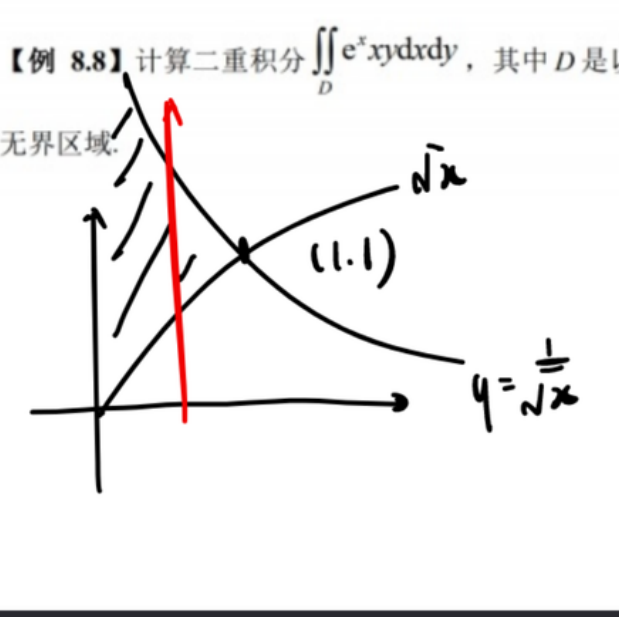
课件原图展开
对于无界区域 $D$, 用有界子区域取极限: $$ \iint_D f(x,y)\,d\sigma = \lim_{D_n\to D} \iint_{D_n} f(x,y)\,d\sigma $$ 其中 $D_n$ 是有界闭区域, 单调增趋于 $D$。
典型例子: $\iint_D e^{-(x^2+y^2)}dxdy$ ($D$ 为第一象限), 用极坐标化为 $\int_0^{\pi/2}d\theta\int_0^\infty re^{-r^2}dr$。
【来源: 0530（1）】
知识连接
- 一元导数 → 偏导数: 一元是"一个方向的变化率", 偏导是"沿坐标轴方向的变化率"。梯度是所有方向导数中最大的那个。
- 一元积分 → 二重积分: 一元积分 $\int_a^b f(x)dx$ 是线段上求和; 二重积分 $\iint_D f(x,y)dxdy$ 是区域上求和。计算都化为"逐次积分"(二次积分)。
- 二重积分 → 三重积分: 再升一维, 积分区域从平面变为空间, 同样化为三次积分。
- 全微分 → 方向导数: 方向导数 $=f_x\cos\alpha+f_y\cos\beta$ (梯度点乘单位方向向量)。全微分是方向导数在任意方向上的线性表达式。
- AC-B² 判别 → 一元二阶导判别: 一元: $f''>0$ 极小, $f''<0$ 极大 —— 这是 $AC-B^2$ 在一维时的退化($B=0$, $A=f''$)。
- 拉格朗日乘数法 → 隐函数求导: 两者本质上都在处理"隐式约束下的优化", 所用的偏导计算是同一套链式法则。
- 二重积分对称性 → 定积分奇偶性: $\int_{-a}^a f(x)dx$ 关于奇函数为零、偶函数翻倍 —— 二重积分的奇偶对称性是此思想的直接推广。